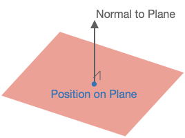

3D Shape Primitives
3D shapes can be drawn, animated and interacted with in FigureOne.
FigureOne tries to simplify the process for using 3D as much as possible. In fact, a number of simple shapes like cubes, spheres and surfaces can be created similarly to shapes in 2D.
However, there are a number of concepts that are useful to know when dealing with 3D that are not needed for 2D. These concepts are especially useful if customizing shapes, or if creating your own.
Geometry
Point
In FigureOne, the Point class is used extensively to define shapes and their properties. Points can be defined by instantiating a Point or by using array notation. For example, creating two rectangles with different positions in two dimensions could look like:
// Create two rectangles. One centered at [0.5, 0.5], and the other at
// [-0.5, -0.5]
figure.add([
{ make: 'rectangle', position: new Fig.Point(0.5, 0.5) },
{ make: 'rectangle', position: [-0.5, -0.5] },
]);
All points in FigureOne have an x, y, and z component. If working in two dimensions, then the z component never has to be defined (as above), and will be 0 by default. When working in three dimensions, the z component can be added.
// Create two rectangles. One centered at [0.5, 0.5, 1], and the other at
// [-0.5, -0.5, -1]
figure.add([
{ make: 'rectangle', position: new Fig.Point(0.5, 0.5, 1) },
{ make: 'rectangle', position: [-0.5, -0.5, -1] },
]);
Plane
While Point, Line and Rect are used to define most geometries in two dimensions, a Plane is required for some three dimensional definitions.
A plane is defined as a position and a normal vector to the plane.

// Create an XZ plane at [0, 0, 0] (the normal is thus along the y axis)
const p = new Fig.Plane([0, 0, 0], [0, 1, 0]);
The Plane object has a number of useful methods for working with planes and can determine things like:
- if a point is on the plane
- if two planes are equal
- if two planes are parallel
- the line at the intersection of two planes
- if a line is parallel to the plane
- the intersect point of a line and plane
- if a line lies on the plane
- a point's projection onto the plane
- the distance between the plane and a point
Scene
In FigureOne shapes are created in a space. The Scene then defines how the shapes are presented to the user (what portion of space gets shown to the user).
Two Dimensions
In two dimensions the Scene simply defines the range of x and y values that will be shown. Four properties are used for this:
left- the minimum x valueright- the maximum x valuebottom- the minimum y valuetop- the maximum y value
Three Dimensions
In three dimensions, we want capture a three dimensional space or volume and draw it to a two dimensional screen. To do this we:
- Choose a position from which to observe the space from
- Choose a direction to look at
- Choose which direction is up
- Choose the limits of the space we want to view in the direction we are looking
- Choose whether proximity changes the size of things (in the real world, things further away look smaller)
- Choose how to light the scene (without lighting, three dimensional objects look flat)
These choices are bundled into three categories:
- Camera
- Projection
- Light
Camera
The camera is the observer of the scene. Scene.camera defines how we are looking at the space we which to draw. It has the properties
position- where the camera is locatedlookAt- where the camera is looking atup- which direction is up for the camera

Projection
Setting up the camera defines how we are looking at the 3D space. We then need to project what we are looking at into two dimensions for the screen.
In three dimensions, some objects will be closer to the camera and others further away.
In real life, objects that are further away look smaller than closer objects. But in technical drawings, it is often useful to have an object's size remain constant (no matter the distance from the camera) so proportions of objects can be properly compared.
Therefore the projection can have two styles:
- perspective projection - shapes get smaller the further they are away from the camera
- orthographic projection - shape size is the same at all distances to the camera

Orthographic Projection
Depending on the style of projection, the expanse of space to be captured in the projection can be defined.
For orthographic projection, adding near and far to left, right, bottom, and top creates a rectangular prism in front of the camera. Any shapes (or portions of shapes) within this prism will be shown. The property names are relative to the camera. camera.lookAt will be a normal to the near and far sides of the prism. camera.up will orient the the top of the prism. camera.position and near will then position the prism while far will give it depth.

Perspective Projection
These same properties cannot be used for perspective projection because size changes with distance from camera. For example the width left and right will be different closer to the camera compared with further away. Therefore, a frustum is used to define visible space with the properties:
fieldOfView: the angular field of view in thecamera.updirectionaspectRatio: the ratio of width to heightnear: the closest visible point to the camerafar: the furthest visible point to the camera

Light
Light is an important factor in vizualizing 3D. If all surfaces of an object are illuminated equally (no lighting modifier, or ambient light), then different faces or curvature of the surface will be indistinguishable. The image will look flat.

FigureOne lighting is a color modifier based on the amount of light reflected from a surface. If all light is reflected from a surface, then the surface color will be the original color. If only a portion of light is reflected from the surface, then the surface color will be a darker form of the original color.
The amount of light reflected from a surface is a function of the direction of the light relative to the surface, and whether the surface faces the light source or not. The direction the surface faces is the direction of its normal.

If L is the normalized light incidence vector and n is the normalized surface normal, then the color modifier m is given by:

Where m will be a value between 0 (no light) and 1 (full light), and a is the ambient light (also between 0 and 1) and is the minimum amount of light that each surface will reflect.
The goal of FigureOne lighting is to provide simple lighting options that can easily show the curvature of a 3D object. It is not realistic:
- It does not cast shaddows
- It lights surfaces from behind
- A surface color is the same on top and below the surface
If more realistic lighting, shaddows or multiple light sources are required, then custom shaders can be used.
FigureOne provides four simple lighting options:
- no light: All surfaces are the shape color with no lighting modification (looks flat)
- ambient light: All surfaces of a shape reflect the same amount of light. If ambient light is less than 1, then the color of each surface will be a darker shade of the shape color (also looks flat).
- directional light: All surfaces of a shape use the same light incidence vector L. This is similar to a plane of light coming from a single direction. The direciton light vector definition points toward the light source.
- point light: All surfaces of a shape use a L equal to the vector between the point source and the surface position.

As an example, let's create a cube with directional lighting. The light source will be predominantly from the x direction, and so the +x face of the cube will be brightest.
const figure = new Fig.Figure();
figure.scene.setProjection({ style: 'orthographic' });
figure.scene.setCamera({ position: [2, 1, 1], up: [0, 1, 0] });
// Setup the direction of directional light. Note, this vector describes where
// the light is coming from.
figure.scene.setLight({ directional: [1, 0.5, -0.1] });
figure.add(
{
make: 'cube',
color: [1, 0, 0, 1],
side: 0.5,
// Note: 'directional' is the default value, and so when using direcitonal
// light this line is not required. It is here for example only.
light: 'directional',
},
);

Rotation
The only information needed for a 2D rotation is the magnitude of rotation and direction. The rotation axis is always along the z axis.
In three dimensions, a rotation can be around any arbitrary axis, and therefore 4 numbers are required. The rotation, and the x, y, and z components of the axis vector.
Both a transform object, or short-hand transform notation can be used to define a 3D rotation. In both cases, first the rotation value is defined, then the axis of rotation.
// Create a rotation component in a transform object
const t1 = new Fig.Transform().rotate(Math.PI / 2, [1, 0, 0]);
// Create a transform from short hand transform notation
const t2 = Fig.getTransform(['r', Math.PI / 2, 1, 0, 0]);
For example, to rotate a cube around the x-Axis
const cube = figure.add({
make: 'cube',
side: 0.5,
color: [0, 1, 1, 1],
// Set the transform so the rotation is arount the x axis
transform: ['r', 0, 1, 0, 0],
});
// Animate rotation around the x axis
cube.animations.new()
.rotation({ velocity: 0.5, duration: null })
.start();

3D Shape Primitives Boilerplate
To test examples within the '3D Shape Primitives' section of the API reference create an index.html file and index.js file.
All examples are snippets which can be appended to the end of the index.js file.
<!-- index.html -->
<!doctype html>
<html>
<body>
<div id="figureOneContainer" style="width: 800px; height: 800px; background-color: white;">
</div>
<script type="text/javascript" src='https://cdn.jsdelivr.net/npm/figureone@0.15.10/figureone.min.js'></script>
<script type="text/javascript" src='./index.js'></script>
</body>
</html>
// index.js
const figure = new Fig.Figure({
scene: {
style: 'orthographic',
camera: {
position: [2, 1, 1],
up: [0, 1, 0],
},
light: {
directional: [0.7, 0.5, 1],
},
},
});